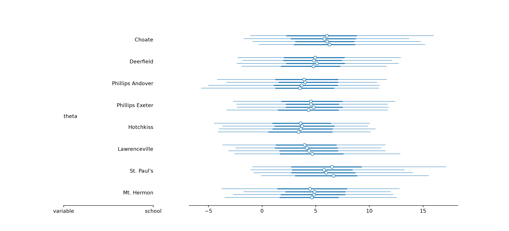
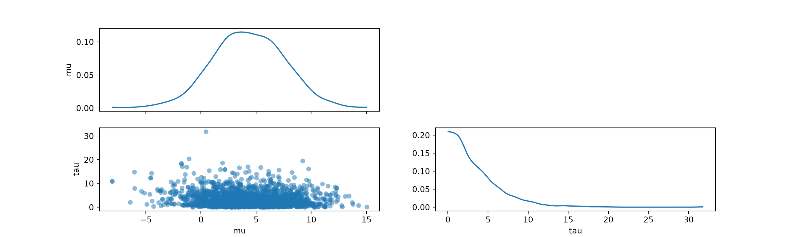
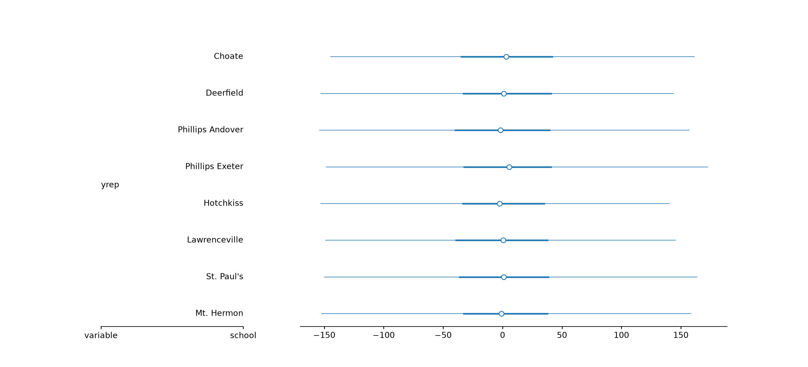
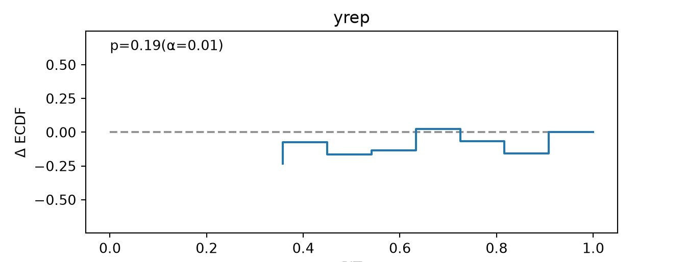
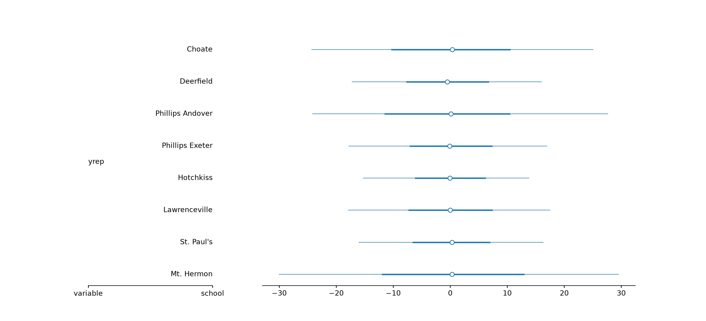
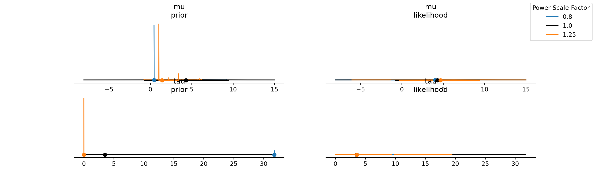

eight_schools_draws.sizes["chain"]4eight_schools_draws.sizes["draw"]500len(eight_schools_draws.data_vars)4For this set of exercises we will use draws from the classic eight schools model. These draws are included in both posterior and ArviZ.
Inspect the posterior object. How many chains, iterations and variables does it contain?
eight_schools_draws.sizes["chain"]4eight_schools_draws.sizes["draw"]500len(eight_schools_draws.data_vars)4Extract only the first chain.
eight_schools_draws.sel(chain=0)<xarray.DataTree 'posterior'>
Group: /
Dimensions: (draw: 500, school: 8)
Coordinates:
* draw (draw) int64 4kB 0 1 2 3 4 5 6 7 ... 493 494 495 496 497 498 499
* school (school) <U16 512B 'Choate' 'Deerfield' ... 'Mt. Hermon'
chain int64 8B 0
Data variables:
mu (draw) float64 4kB 8.991 8.773 2.791 7.471 ... 8.396 2.627 6.41
theta_t (draw, school) float64 32kB 0.8482 -0.5389 ... -1.183 -0.4489
tau (draw) float64 4kB 6.903 2.307 1.696 2.166 ... 1.055 0.806 1.319
theta (draw, school) float64 32kB 14.85 5.271 -0.08628 ... 4.848 5.818
Attributes:
created_at: 2025-01-19T14:30:19.978660+00:00
arviz_version: 0.20.0
inference_library: pymc
inference_library_version: 5.20.0
sampling_time: 1.7209508419036865
tuning_steps: 1000Extract only the first 10 iterations, from all the chains.
eight_schools_draws.sel(draw=slice(0, 10))<xarray.DataTree 'posterior'>
Group: /
Dimensions: (chain: 4, draw: 11, school: 8)
Coordinates:
* chain (chain) int64 32B 0 1 2 3
* draw (draw) int64 88B 0 1 2 3 4 5 6 7 8 9 10
* school (school) <U16 512B 'Choate' 'Deerfield' ... 'Mt. Hermon'
Data variables:
mu (chain, draw) float64 352B 8.991 8.773 2.791 ... 10.81 0.6684
theta_t (chain, draw, school) float64 3kB 0.8482 -0.5389 ... 0.1961 0.2576
tau (chain, draw) float64 352B 6.903 2.307 1.696 ... 1.419 5.752 1.674
theta (chain, draw, school) float64 3kB 14.85 5.271 ... 0.9967 1.1
Attributes:
created_at: 2025-01-19T14:30:19.978660+00:00
arviz_version: 0.20.0
inference_library: pymc
inference_library_version: 5.20.0
sampling_time: 1.7209508419036865
tuning_steps: 1000Thin the draws so that only half of the draws are included. Then try automatic thinning.
az.thin(eight_schools_draws, factor=2)<xarray.DataTree 'posterior'>
Group: /posterior
Dimensions: (chain: 4, draw: 250, school: 8)
Coordinates:
* chain (chain) int64 32B 0 1 2 3
* draw (draw) int64 2kB 0 2 4 6 8 10 12 14 ... 486 488 490 492 494 496 498
* school (school) <U16 512B 'Choate' 'Deerfield' ... 'Mt. Hermon'
Data variables:
mu (chain, draw) float64 8kB 8.991 2.791 2.447 ... 4.42 1.448 1.67
theta_t (chain, draw, school) float64 64kB 0.8482 -0.5389 ... 0.7072 1.03
tau (chain, draw) float64 8kB 6.903 1.696 5.669 ... 4.207 2.349 1.873
theta (chain, draw, school) float64 64kB 14.85 5.271 ... 2.995 3.599az.thin(eight_schools_draws)<xarray.DataTree 'posterior'>
Group: /posterior
Dimensions: (chain: 4, draw: 250, school: 8)
Coordinates:
* chain (chain) int64 32B 0 1 2 3
* draw (draw) int64 2kB 0 2 4 6 8 10 12 14 ... 486 488 490 492 494 496 498
* school (school) <U16 512B 'Choate' 'Deerfield' ... 'Mt. Hermon'
Data variables:
mu (chain, draw) float64 8kB 8.991 2.791 2.447 ... 4.42 1.448 1.67
theta_t (chain, draw, school) float64 64kB 0.8482 -0.5389 ... 0.7072 1.03
tau (chain, draw) float64 8kB 6.903 1.696 5.669 ... 4.207 2.349 1.873
theta (chain, draw, school) float64 64kB 14.85 5.271 ... 2.995 3.599Extract the variable mu and summarise it via mean and sd.
# XXX do we want to show this?
az.summary(eight_schools_draws, var_names=["mu"], kind="stats") mean sd eti89_lb eti89_ub
mu 4.3 3.3 -0.75 9.4## or this?
az.summary(eight_schools_draws, var_names=["mu"], kind="stats")[["mean", "sd"]] mean sd
mu 4.3 3.3Create a new variable that is the difference between school 1 and school 2 means. Call it diff_1_2. Do the same with school 3 and school 4. Then summarise these new variables with median, 0.3 and 0.7 quantiles.
The simplest version is to call az.summary() with the kind argument set to "stats_median" and the ci_prob argument set to 0.40.
import xarray as xr
diff_1_2 = eight_schools_draws["theta"].isel(school=1) - eight_schools_draws["theta"].isel(school=0)
diff_3_4 = eight_schools_draws["theta"].isel(school=3) - eight_schools_draws["theta"].isel(school=2)
diffs = xr.Dataset({"diff_1_2": diff_1_2, "diff_3_4": diff_3_4})
az.summary(diffs, kind="stats_median", ci_prob=0.40) median mad eti40_lb eti40_ub
diff_1_2 -0.33 2 -2.3 0.69
diff_3_4 0.15 2 -0.96 1.9But a more explicit version is to do.
import pandas as pd
result = pd.DataFrame({
"median": diffs.median(dim=["chain", "draw"]).to_pandas(),
"q30": diffs.quantile(0.3, dim=["chain", "draw"]).to_pandas(),
"q70": diffs.quantile(0.7, dim=["chain", "draw"]).to_pandas(),
})
result median q30 q70
diff_1_2 -0.331771 -2.276892 0.686635
diff_3_4 0.154759 -0.962139 1.931608Optionally you can use .sel and reference the school by name like eight_schools_draws["theta"].sel(school="Choate")
Plot the marginal posteriors for the school means.
az.plot_forest(eight_schools_draws, var_names=["theta"])
Plot the variables mu and tau in an pairs plot.
az.plot_pair(eight_schools_draws, var_names=["mu", "tau"])
Calculate the R-hat for all the variables in the model. Which variables have high R-hat (> 1.01)?
az.rhat(eight_schools_draws)<xarray.DataTree 'posterior'>
Group: /posterior
Dimensions: (school: 8)
Coordinates:
* school (school) <U16 512B 'Choate' 'Deerfield' ... 'Mt. Hermon'
Data variables:
mu float64 8B 1.001
theta_t (school) float64 64B 1.002 1.0 1.0 1.001 1.002 1.006 1.002 1.002
tau float64 8B 1.003
theta (school) float64 64B 1.001 0.9993 1.001 1.001 ... 1.0 1.003 1.002Calculate the bulk and tail ESS for all the variables in the model.
az.summary(eight_schools_draws)[["ess_bulk", "ess_tail"]] ess_bulk ess_tail
mu 2114 1219
theta_t[Choate] 2249 1467
theta_t[Deerfield] 2638 1512
theta_t[Phillips Andover] 2689 1511
theta_t[Phillips Exeter] 2431 1586
theta_t[Hotchkiss] 2190 1545
theta_t[Lawrenceville] 2372 1297
theta_t[St. Paul's] 1980 1391
theta_t[Mt. Hermon] 2420 1538
tau 833 712
theta[Choate] 2195 1443
theta[Deerfield] 2321 1499
theta[Phillips Andover] 2108 1504
theta[Phillips Exeter] 2288 1434
theta[Hotchkiss] 2103 1609
theta[Lawrenceville] 2364 1662
theta[St. Paul's] 1431 1629
theta[Mt. Hermon] 2187 1569Calculate the mean of each variable, and also the Monte Carlo standard error of the mean.
az.summary(eight_schools_draws)[["mean", "mcse_mean"]] mean mcse_mean
mu 4.3 0.072
theta_t[Choate] 0.33 0.021
theta_t[Deerfield] 0.1 0.018
theta_t[Phillips Andover] -0.08 0.019
theta_t[Phillips Exeter] 0.05 0.019
theta_t[Hotchkiss] -0.15 0.02
theta_t[Lawrenceville] -0.03 0.019
theta_t[St. Paul's] 0.35 0.022
theta_t[Mt. Hermon] 0.05 0.02
tau 3.5 0.091
theta[Choate] 6.1 0.12
theta[Deerfield] 4.9 0.097
theta[Phillips Andover] 3.8 0.12
theta[Phillips Exeter] 4.6 0.1
theta[Hotchkiss] 3.6 0.1
theta[Lawrenceville] 4.3 0.1
theta[St. Paul's] 6.2 0.14
theta[Mt. Hermon] 4.7 0.12Then do the same for the 0.05 and 0.95 quantiles. Think about how the Monte Carlo standard error might influence how you report the quantiles.
mcse_q05 = az.mcse(eight_schools_draws, method="quantile", prob=0.05).ds.expand_dims(summary=["mcse_5%"])
mcse_q95 = az.mcse(eight_schools_draws, method="quantile", prob=0.95).ds.expand_dims(summary=["mcse_95%"])
eti_05 = (
az.eti(eight_schools_draws, prob=0.90)
.ds.rename({"ci_bound": "summary"})
.assign_coords(summary=["eti90_lb", "eti90_ub"])
)
summary = xr.concat([mcse_q05, mcse_q95, eti_05], dim="summary")
az.dataset_to_dataframe(summary, sample_dims=["summary"]).T mcse_5% mcse_95% eti90_lb eti90_ub
mu 0.244848 0.144510 -0.918682 9.530723
theta_t[Choate] 0.072708 0.041516 -1.443312 1.967369
theta_t[Deerfield] 0.042073 0.050981 -1.424052 1.701920
theta_t[Phillips Andover] 0.058658 0.052118 -1.656461 1.432035
theta_t[Phillips Exeter] 0.059665 0.062823 -1.486306 1.579305
theta_t[Hotchkiss] 0.047558 0.047945 -1.656586 1.353910
theta_t[Lawrenceville] 0.050866 0.035970 -1.656941 1.503961
theta_t[St. Paul's] 0.096855 0.051169 -1.285794 1.927415
theta_t[Mt. Hermon] 0.050794 0.048198 -1.606512 1.620798
tau 0.036199 0.337611 0.206986 9.729145
theta[Choate] 0.280439 0.459703 -1.279904 15.268796
theta[Deerfield] 0.280272 0.410776 -2.256395 12.959238
theta[Phillips Andover] 0.445232 0.166002 -4.865964 11.342719
theta[Phillips Exeter] 0.380658 0.300268 -2.976054 12.214636
theta[Hotchkiss] 0.383721 0.255297 -4.519310 10.358722
theta[Lawrenceville] 0.362746 0.228841 -3.208492 11.797317
theta[St. Paul's] 0.223813 0.494425 -0.814740 15.327724
theta[Mt. Hermon] 0.433716 0.314653 -3.376179 12.817132Calculate the minimum sample size for stable estimates for each variable in the model. Which has the highest minimum sample size?
eight_schools_draws.azstats.pareto_min_ss()<xarray.DataTree 'posterior'>
Group: /posterior
Dimensions: (school: 8)
Coordinates:
* school (school) <U16 512B 'Choate' 'Deerfield' ... 'Mt. Hermon'
Data variables:
mu float64 8B 10.0
theta_t (school) float64 64B 10.0 10.07 10.09 10.0 10.14 10.0 10.0 10.73
tau float64 8B 11.08
theta (school) float64 64B 11.31 11.4 15.74 10.6 10.0 15.07 12.58 13.99We can generate prior predictions from the eight schools model, using the following function.
Generate 1000 prior predictive draws, and plot the distributions for each school. Try with different mu_prior_sd and tau_prior_sd values (e.g. 1, 10, 100).
az.plot_forest(eight_schools_prior(ndraws=1000, mu_prior_sd=1, tau_prior_sd=1), group="prior", var_names=["yrep"])az.plot_forest(eight_schools_prior(ndraws=1000, mu_prior_sd=0.01, tau_prior_sd=1), group="prior", var_names=["yrep"])az.plot_forest(eight_schools_prior(ndraws=1000, mu_prior_sd=100, tau_prior_sd=1), group="prior", var_names=["yrep"])az.plot_forest(eight_schools_prior(ndraws=1000, mu_prior_sd=1, tau_prior_sd=0.01), group="prior", var_names=["yrep"])az.plot_forest(eight_schools_prior(ndraws=1000, mu_prior_sd=1, tau_prior_sd=100), group="prior", var_names=["yrep"])
We can create posterior predictive draws from our posterior draws and plot against our actual observations.
Plot the posterior predictions on top of the actual observations. Then use the PIT-ECDF plot.
y = np.array([28, 8, -3, 7, -1, 1, 18, 12])
posterior_predictive_draws["observed_data"]["yrep"] = xr.DataArray(y, dims=["school"])
az.plot_ppc_pit(posterior_predictive_draws, var_names=["yrep"])
Check for prior and likelihood sensitivity in the eight schools model. First check by power-scaling all priors jointly, then select only the “mu” and only the “tau” prior separately.
az.psense_summary(dt)We detected potential issues. For more information on how to interpret the results, please check
https://arviz-devs.github.io/EABM/Chapters/Sensitivity_checks.html#interpreting-sensitivity-diagnostics-summary
or read original paper https://doi.org/10.1007/s11222-023-10366-5
prior ... diagnosis
mu 2.230 ... potential prior-data conflict
theta_t[Choate] 0.833 ... potential strong prior / weak likelihood
theta_t[Deerfield] 0.384 ... potential strong prior / weak likelihood
theta_t[Phillips Andover] 0.503 ... potential strong prior / weak likelihood
theta_t[Phillips Exeter] 0.388 ... potential strong prior / weak likelihood
theta_t[Hotchkiss] 0.739 ... potential strong prior / weak likelihood
theta_t[Lawrenceville] 0.368 ... potential strong prior / weak likelihood
theta_t[St. Paul's] 0.854 ... potential strong prior / weak likelihood
theta_t[Mt. Hermon] 0.264 ... potential strong prior / weak likelihood
tau 12.067 ... potential prior-data conflict
theta[Choate] 3.189 ... potential prior-data conflict
theta[Deerfield] 3.105 ... potential prior-data conflict
theta[Phillips Andover] 2.685 ... potential strong prior / weak likelihood
theta[Phillips Exeter] 1.938 ... potential prior-data conflict
theta[Hotchkiss] 2.044 ... potential strong prior / weak likelihood
theta[Lawrenceville] 2.152 ... potential strong prior / weak likelihood
theta[St. Paul's] 4.373 ... potential prior-data conflict
theta[Mt. Hermon] 3.162 ... potential prior-data conflict
[18 rows x 3 columns]
Next plot sensitivity using as density plots. Plot only the mu and tau variables.
az.plot_psense_dist(dt, var_names=["mu", "tau"])
We have provided four sets of posterior draws from hierarchical models of observed migratory bird counts recorded between 2000 and 2020 at the Hanko Bird Observatory (Halias).
For species \(j\),
\(y \sim \mathrm{Poisson}(\lambda_j)\)
or
\(y \sim \mathrm{NegativeBinomial}(\lambda_j, \phi).\)
The species-specific abundances are linked through a hierarchical prior,
\(\log(\lambda_j) \sim \mathrm{Normal}(\mu, \sigma)\)
where \(\mu\) represents the average abundance across species and \(\sigma\) controls the amount of pooling between species.
Your task is to explore the posterior draws and diagnostic outputs for the four fitted models.
As you work through the diagnostics, try to identify which model corresponds to each of the following situations:
Use posterior summaries, convergence diagnostics, posterior predictive checks, and sensitivity analyses to guide your investigation.
You can also look at the Stan model (birds_per_year.stan) and consider how you might improve it.